2025 – 2026 · in progress
1000 W LED Gobo Projector
A liquid-cooled 1000 W LED projector for gobo (patterned-light) projection, with my own controller board, firmware, optics housing and frame.
- KiCad (4-layer)
- SAMD51 / CAN
- PMBus
- Liquid cooling
- Embedded C++
- Power electronics
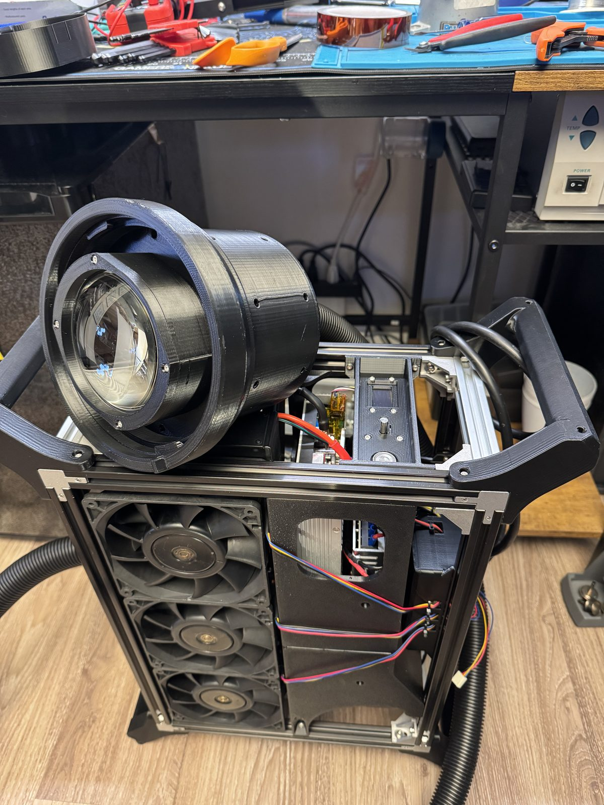
Gobo projectors throw a patterned image, like a logo or texture, onto walls and floors. Commercial fixtures in this power class are expensive and closed. This one is built around a single 1000 W LED with liquid cooling, a custom optics housing and a controller I designed from the PCB up.
System
- Light engine: a 1000 W LED on a liquid cold plate, cooled by a pump, reservoir and fans, behind a large lens and the gobo/lens assembly.
- Power: a Mean Well UHP-1500-48 supply driven either by analog current control or digitally over CAN/PMBus, with slew-limited current setpoints.
- Controller: an Adafruit Feather M4 CAN (SAMD51) on my own 4-layer KiCad board, with isolated interfaces, fan and pump drivers, tachometer and thermistor inputs, and an OLED, rotary encoder and power button for the UI.
- Frame: houses the PSU, cooling loop and electronics, with the head mounted on top.

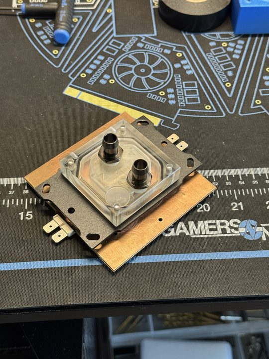

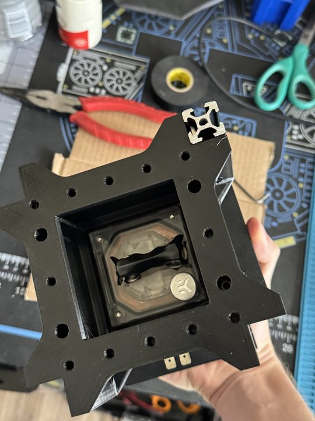

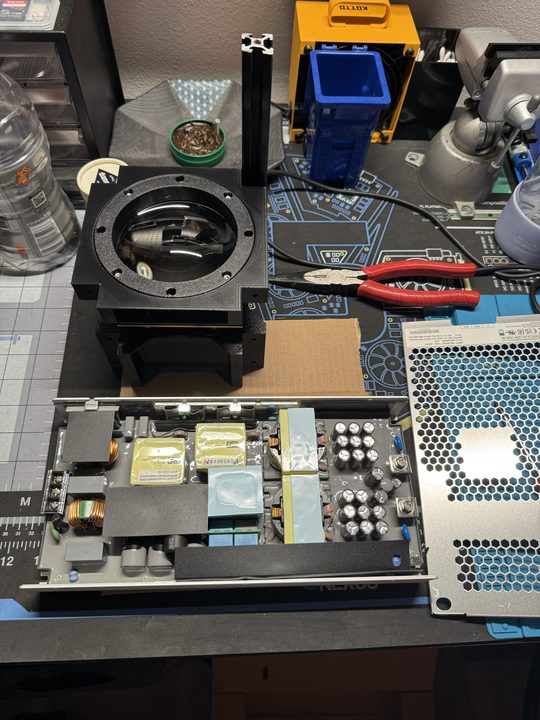

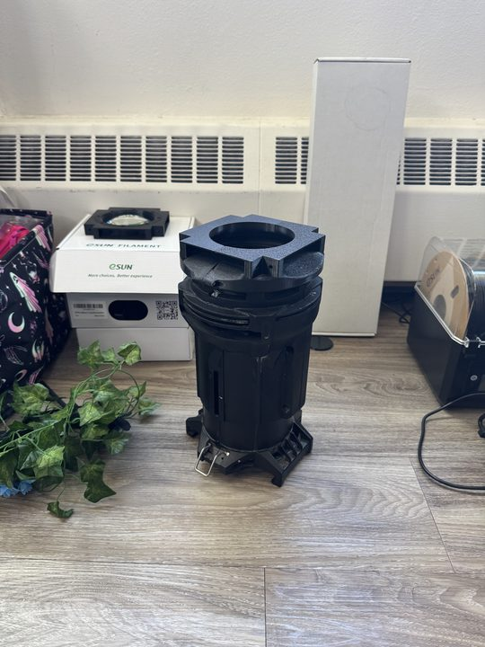

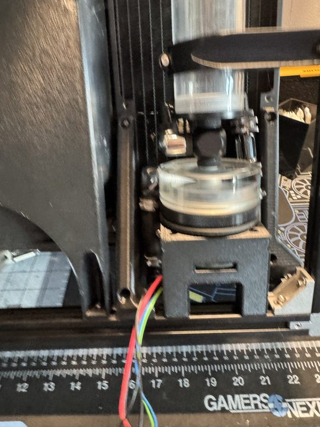

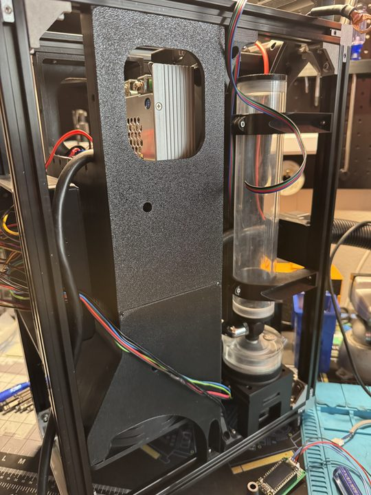
Firmware
PlatformIO / Arduino C++ structured like a small product rather than a sketch:
- Finite state machine (
INIT → RUN → ERROR_KILL) driven from the main loop.ERROR_KILLlatches and only clears on reset, or on a deliberate button hold that ignores just the faulted channel until the next power cycle. - Dependency injection: a composition root builds every driver (tachometers, CAN and analog PSU backends, OLED, thermistors), and services receive only the hardware they need.
- Services for PSU control (setpoint, slew limiting, CAN-vs-analog routing), cooling (fan and pump duty curves on LED and water temperature), input and UI.
- Fault monitoring on LED temperature, water temperature, pump, every fan, PSU comms and the encoder, with blink codes on the status LED as a fallback display.
- Standalone bench firmwares for testing fans, tachometers and the PSU in isolation.
Controller board

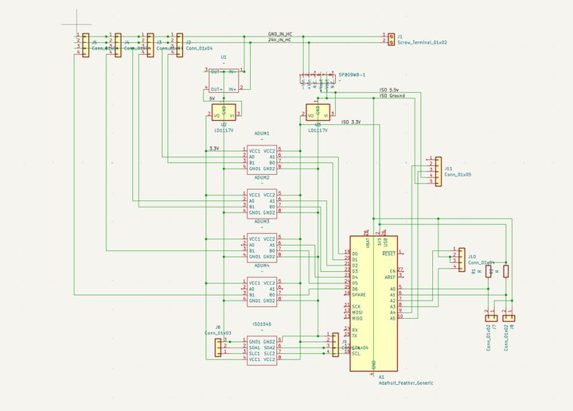

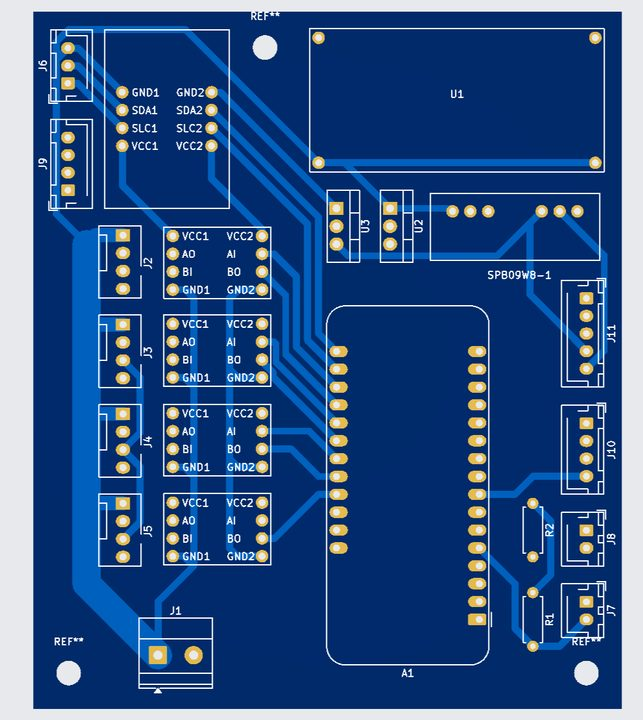

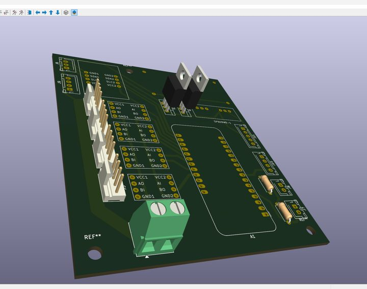

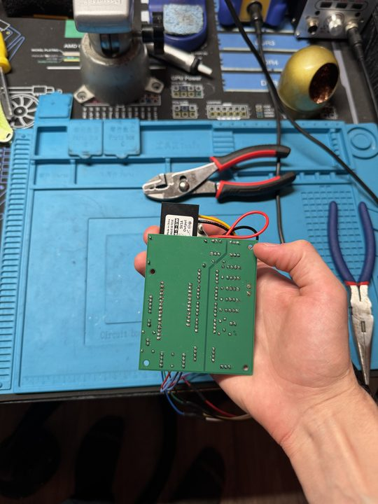

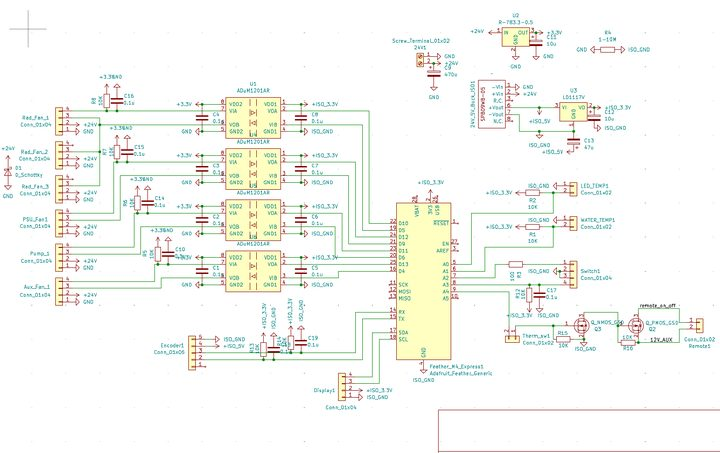

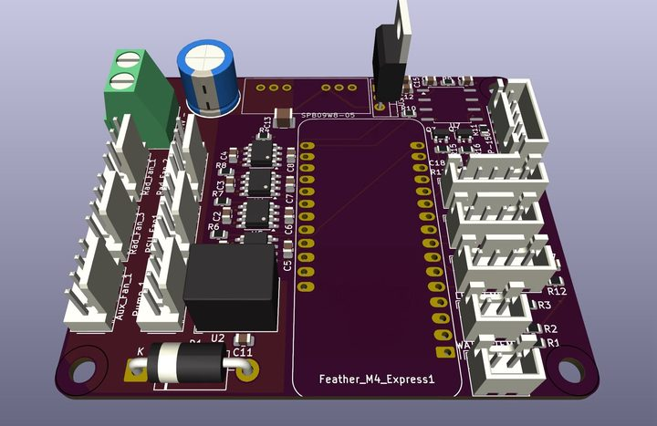
Optics and housing

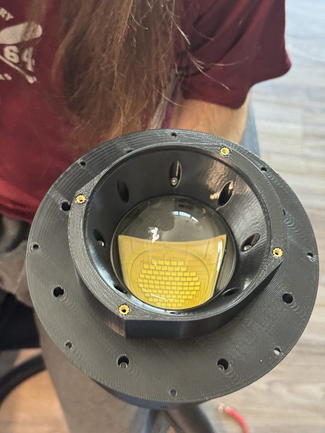

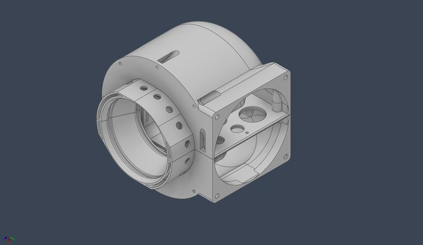

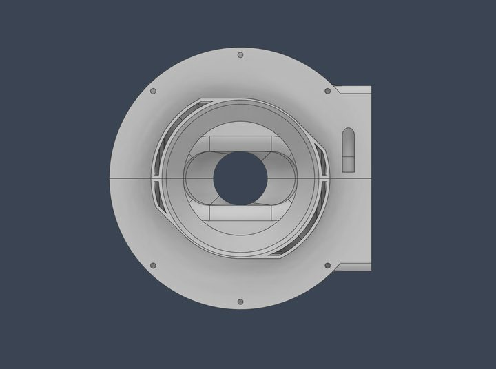

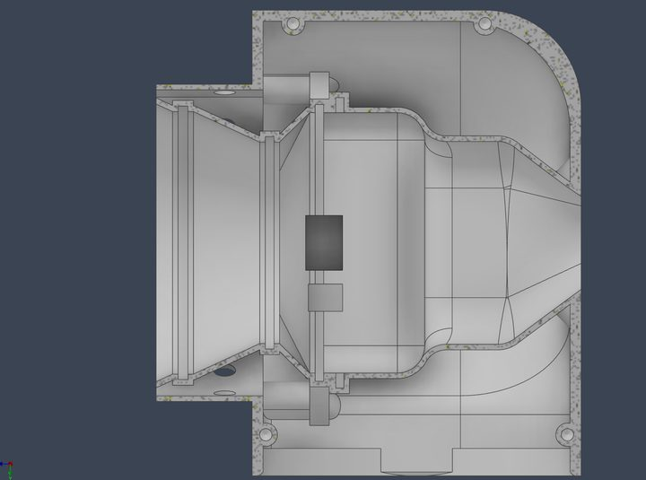

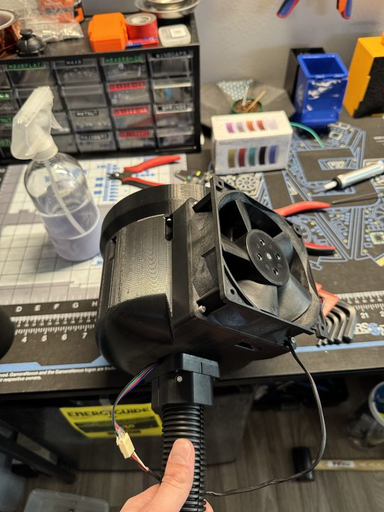

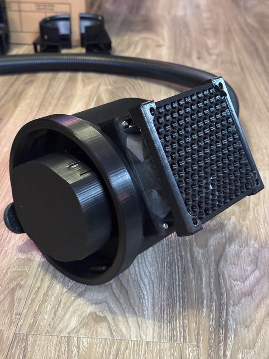

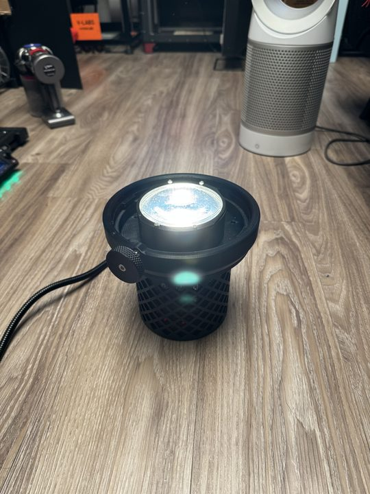

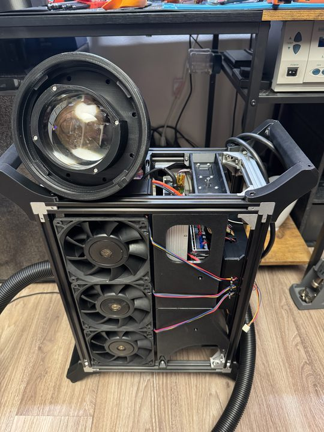

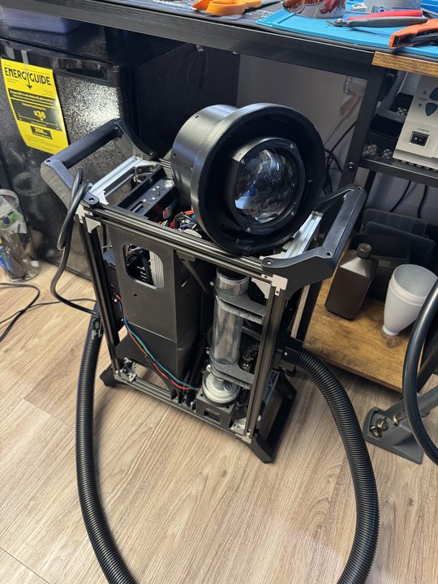